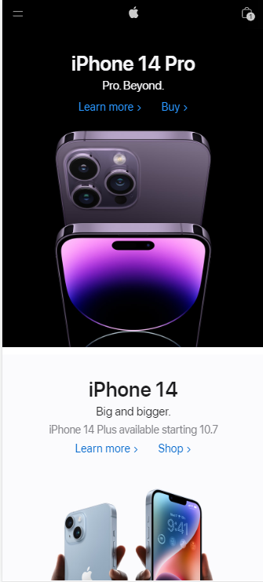

Visual Hierarchy
fitbit

Visual hierarchy refers to the arranging of components in ascending or descending order of importance. This is accomplished using proportion, color, images, contrast, typography, whitespace, texture, and style. A critical purpose of visual hierarchy is to provide a focal point; this indicates to visitors where the most critical information is located.
Visit PageAlignment
Quip
Although alignment is typically overlooked, without this tool a design would lack a sense of direction, unity, or organization. Alignment simply refers to how elements are placed on a page. Its purpose goes beyond organization, it is vital for enhancing the overall visual appeal of a design or page layout. Typically, alignment is applied to two specific design elements: typography and images. Graphic designers attempt to create a balance between the two so that both images and text are visually appealing and have a seamless connection. Through good use of alignment, a composition will appear neat, clean, and readable to an audience.
Visit PageContrast
Apple
People say that opposites attract and this can be true for elements of design as well. Imagine a composition without contrast every color, font, shape, etc. would be the same size, and that design would be rather dull. Contrast is the tool that makes a design “pop,” making it memorable for viewers. Contrast also aids in the usability of a composition. A design’s organization is dependent upon how contrast is used to lead a viewer’s eye towards what is most important. For instance, if all the content within a design was the same size, how would your audience know what information is the most significant? Through contrast designers are able to highlight certain elements they want to emphasize, creating a focal point for an audience and a visual hierarchy.
Visit Page